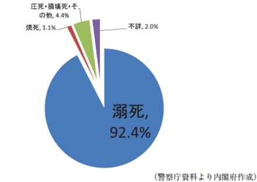

津波～地震における津波の被害～
塩害
津波によって覆われた建物や農地などが海水の塩分によって浸透してしまう「塩害」を取り上げます。 東日本大震災では想定外の津波が発生し、沿岸部に甚大な冠水とそれと伴う塩害被害が報告されています。特に東北地方では津波により農地が冠水し、塩害で稲作ができなくなり、水田の被害面積は約20,000haにも及びました。 塩害被害をうけた汚泥のほとんどは海から運ばれたてきたもので、海水が土壌中に侵入すると土壌の単粒化や硬直化が高まり浸水性が低下していきます。また、排水不良による作物の根腐れが発生し、稲作に大きな被害をもたすのです。図1 塩害被害を受けた農地
引用 ［1］農地の塩害と除塩 農村振興局 (maff.go.jp)
〈塩害の仕組み〉
塩害の仕組みは主に３つ考えられています。
１．浸透圧による問題
塩化ナトリウムが多量に発生することにより、浸透圧が高くなります。
高まると植物の根を阻害することになります。
浸透圧とは：濃度の低いほうから高いほうへと移動するこの水を引っ張る力を言います。
２．ナトリウムイオンによる整理障害
浸透圧とは：濃度の低いほうから高いほうへと移動するこの水を引っ張る力を言います。
ナトリウムイオンが高濃度で存在すると、植物細胞のイオン濃度も上昇して酵素反応を抑制してしまいます。
３．ナトリウムイオンによる土壌構造への影響
土壌中のナトリウムイオン濃度が高いと土壌粘土鉱物は分散しやすくなり、
団粒構造が破壊されます。
団粒構造とは：土壌粒子が小さな集合体を形成している構造を言います。
団粒構造とは：土壌粒子が小さな集合体を形成している構造を言います。
参照［2］TOHO LEO (2019) 津波により冠水した水田の塩害・除塩対策技術 | グリーンインフラの東邦レオ (greeninfrastructure.jp)
［3］団粒構造とは？植物が良く育つ土壌に必要な要素と土の作り方 (100nen-kankyo.jp)
〈塩害を受けた農地を復旧するために〉
塩害によって使い物にならなくなった農地は除塩という措置をとって復旧することができます。被害を受けた農地を純水で洗い流すイメージが多いと考えますがそれはとても効率の悪く、実際は化学的な根拠による除塩作業があったのです。
塩素とナトリウムが化合してできる塩化ナトリウムによって塩分は発生します。除塩に最も効果的なのは石灰に含まれているカルシウムです。土壌中のナトリウムにカルシウムが結合することで塩化ナトリウムを除去できる化学反応が起きるのです。今では除塩に効果のある土壌改良され販売しているものにはほとんどカルシウムが含まれているのです。

図2 除塩に関するメカニズム
引用
［1］農地の塩害と除塩 農村振興局 (maff.go.jp)
［4］農地で塩害が発生するメカニズムと除塩の有効性,具体的な方法 (kaku-ichi.co.jp)
［1］農地の塩害と除塩 農村振興局 (maff.go.jp)
［4］農地で塩害が発生するメカニズムと除塩の有効性,具体的な方法 (kaku-ichi.co.jp)
人的被害
津波が発生した際に起こった溺死などによる人的被害について取り上げます。 東日本大震災では、死者・行方不明者ともに12都道府県でおこり、死者が1万5,859人、行方不明者3,021人とされています。（平成24年5月30日警察庁発表） 図3のように東日本大震災における死因の割合は約9割が津波の被害に及んだといいます。
図3 東日本大震災による死因
引用 ［5］防災情報のページ - 内閣府 (bousai.go.jp)
〈津波が襲来したときの行動〉
このような状況から少しでも人的被害を抑えるために一人一人の危機的意識が必要となります。まず、津波が迫っていることが分かったら必ず避難することを意識し、避難するときは徒歩で避難します。避難場所として高台に逃げることが鉄則ですが具体的には3階以上の場所が望ましいとされています。逆に避難してはいけない場所として津波の水圧で倒壊しやすい木造の建物や、河川に近い場所があげられます。このように津波が来た時、自分のいる場所から避難できる場所までを冷静に判断し、適した選択をすることが求められています。
参照 ［6］避難場所マップ・防災対策 (dk-kurashi.com)
津波火災
生活に必要とするガスボンベや自動車などの可燃物が漂流物の衝突などによって発生する津波火災について取り上げます。
東日本大震災では津波浸水が極めて深刻なこともあり、関東大震災や阪神淡路大震災を超える373件の出火件数が報告されました。この中の出火件数は全体の4割を占めているものの大規模な火災としては津波火災によるものであったといいます。
引用［7］津波火災現象の解明とその対策 | 地震本部 (jishin.go.jp)
深刻な被害を及ぼした東日本大震災における津波火災から4種類の発生パターンに分けられることが判明しました。
〈4種類の津波火災〉
◎斜面瓦礫集積型の火災
倒壊家屋や自動車、ガスボンベなど多くの可燃物が森林などの火災の燃料となるものに打ち寄せられます。そこで漂流してきた火の元が燃え移り、津波火災へとつながります。
◎都市近郊平野部型の火災
都市部の津波火災は膨大な量のガスボンベや車などが多くの出火点をもたらします。
津波避難ビルなどの生存空間を脅かすもので、避難者の二次避難が不可能となるケースもあります。
◎危険物流出型の火災
危険物が流出するなどして海上での大規模火災が継続するもので、船や瓦礫が回遊すると湾の周囲に延焼する、非常にリスクが高いものです。
◎電気系統単発出火型の火災
車や家屋の電気系統が津波の浸水により出火するもので、延焼免責はそれほど大きくありませんが、津波到達後時間が経過してからも継続的に発生する傾向にある火災です。
引用［8］地震に伴う津波火災の恐怖と企業が実施するべき対策 FASTALERT
〈津波火災における備え〉
津波火災が発生した時に冷静な判断をとれるように私たちができることとしてハザードマップを用いて自宅や学校、その周りにある建物の危険度をしっかり把握しておく必要があります。社会的取り組みとして津波火災が発生したことを想定した避難手段の検討や消防戦術といった対策を検討する必要があるのです。
参照［9］全国の消防設備点検【全国消防点検.com】 (shobotenken.com)
参考文献
[1] 農地の塩害と除塩 農村振興局 (maff.go.jp)[2] TOHO LEO (2019) 津波により冠水した水田の塩害・除塩対策技術 | グリーンインフラの東邦レオ (greeninfrastructure.jp)
[3] 百年環境グループ (2019) 団粒構造とは？ 植物が良く育つ土壌に必要な要素と土の作り方 ｜ (100nen-kankyo.jp)
[4] (2016)農地で塩害が発生するメカニズムと除塩の有効性,具体的な方法 | (kaku-ichi.co.jp)
[5] (2012) 人的被害 : 防災情報のページ - 内閣府 (bousai.go.jp)
[6] (2017) 避難場所マップ・防災対策 (dk-kurashi.com)
[7] 津波火災現象の解明とその対策 | 地震本部 (jishin.go.jp)
[8] （2022）地震に伴う津波火災の恐怖と企業が実施するべき対策 | FASTALERT
[9] (2022) 全国の消防設備点検【全国消防点検.com】 (shobotenken.com)